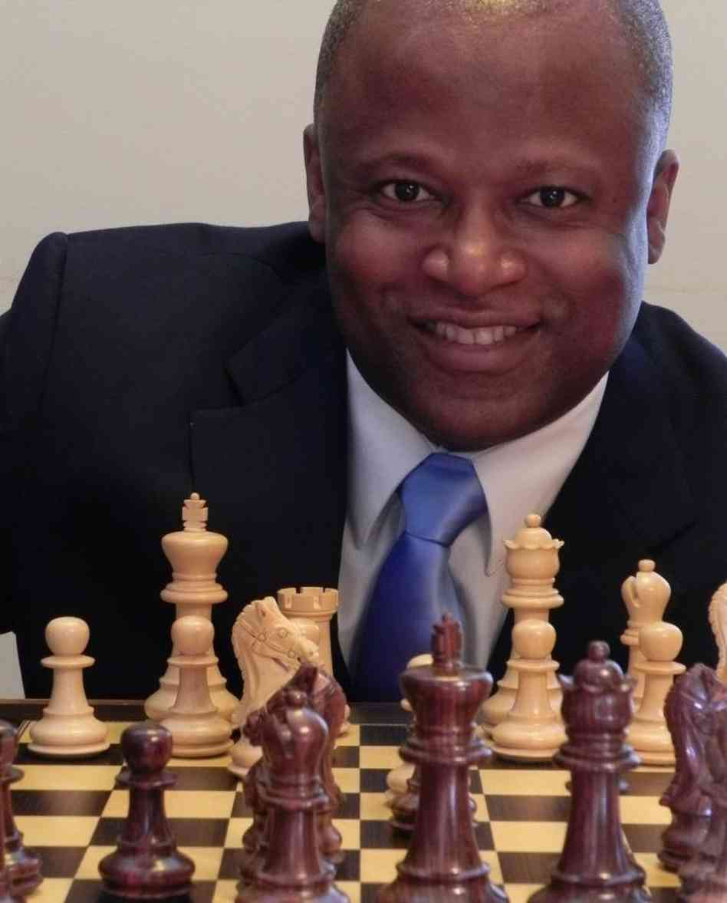

DeepView
Computational Tools
for Chess Spectatorship
Greg Borenstein, Prof. Kevin Slavin, Grandmaster Maurice Ashley
Competitive chess is an exciting spectator sport. It is fast-paced, dynamic, and deeply psychological. Unfortunately, most of the drama inherent in the game is only visible to spectators who are themselves expert chess players. DeepView seeks to use computational tools to make the drama of high-level Chess accessible to novice viewers.
There is a long tradition of software trying to beat human players at chess. DeepView takes advantage of the algorithmic tools created in the development of advanced chess engines such as Deep Blue, but instead uses them to understand and explain the styles of individual players and the dynamics of a given match. It puts powerful data science tools that can calculate player position preferences and likely game outcomes in the hands of Chess commentators who can use them to better explain the exciting human story inside every match.
DeepView is a collaboration with chess Grandmaster and Media Lab Fellow, Maurice Ashley. Ashley is the founder of the Millionaire Chess Open, the largest money-prize open chess tournament in history, first held October 9-13, 2014. Ashley is a gifted chess commentator on a mission to make chess as popular as poker.
DeepView's mission is to help everyone see chess like Maurice.Method and Impact
DeepView is a suite of computational and statistical tools meant to help novice viewers understand the drama of a high-level chess match through storytelling. Good drama includes characters and situations. We worked with GM Ashley to indentify the elements of individual player's styles and the components of an ongoing match that computation could analyze to help bring chess to life. We gathered an archive of more than 750,000 games from chessgames.com including extensive collections of games played by each of the grandmasters in the tournament. We then used the Stockfish open source chess engine to analyze the details of each move within these games. We combined these results into a comprehensive statistical analysis that provided us with meaningful and compelling information to pass on to viewers and to provide to chess comentators to aid in their work.
The questions we answered include:
- How do you describe different players' style of chess?
- Can you describe the matchup between two players in a way that sets expectations for a match?
- Are some players more likely to win short or long games?
- Are some players particularly good or bad in the late phase of the game?
- How likely is a player with a higher ranking to actually beat a lower player?
- Can we reduce a chess position to a single meaningful score that would be easily understood?
- Can we detect the most interesting games going on in a tournament with hundreds of players?
In addition to making chess more accessible to novice viewers, we believe that providing access to these kinds of statistics will change how expert players play chess, allowing them to prepare differently for specific opponents and to detect limitations or quirks in their own play.
Further, we believe that the techniques used here could be applied to other sports and games as well. Specifically we wonder why traditional sports broadcasting doesn't use measures of significance to filter or interpret the statistics they show to their viewers. For example, is a batter's RBI count actually informative without knowing whether it is typical or extraordinary compared to other players? And when it comes to eSports with their exploding viewer population, this approach points to rich possibilities improving the spectator experience and translating complex gameplay so it is more legible for novice fans.
Player CharacterComputing Player Personalities by Analyzing Move Choices
SUMMARY One of the key components of drama is character. In chess, a player's character is seen in the types of moves they favor. Do they make moves that create new threats and attack the other player? Or do they wait patiently, creating space and setting up passed pawns to dominate the late game?
We built tools that analyze a player's past games and look at every move they've made in order to determine the details of their particular play style. We also detect patterns in which games they win and lose to see if they have any specific strengths or weaknesses. Are they more likely to win a short aggressive game than a long drawn-out one? How do they do in the endgame after a queen trade?
Together, these statistics paint a portrait of each player that helps new viewers understand what to watch for as they play. And, in each match, we can juxtapose the qualities of the two opposing players to help viewers undestand how they match up against each other.


Elo Oddsmaking Determining Odds of Victory Between Two Players
SUMMARY At the start of any chess match who's most likely to win and how strong a favorite are they?
Chess uses the Elo rating system to keep track of competitive players rankings. Players' Elo scores improve when they beat higher-rated players and decline when they lose to lower-rated ones. The Elo system is widely imitated across other games (and even video games) for determing the relative skill of players. However it is not very easy for novice viewers to understand. Is 2700 a good score? How much better is 2800 player than a player at 2775? To answer these questions, we surveyed an archive of more than 300,000 games and looked at how often the player with the higher rating won as the gap in Elo score widened.
The resulting data lets us predict the odds of any two-player matchup based on the difference in their Elo scores. Seeing otherwise arcane Elo scores translated into straightforward odds helps a novice viewer understand the relative strengths of the players in familiar terms.

A Score for ChessUsing a Chess Engine and Machine Learning to Predict Victory from a Chess Position
SUMMARY In the midst of a well-fought chess match can you tell which side is winning? Can you boil down the complex analysis of a subtle chess position into a single score that indicates who's winning a by how much?
It can be very difficult for a novice viewer to judge the current state of a chess match just by looking at the position of the pieces on the board. This is particularly true in games between grandmasters where players tend to resign games as unwinnable after losing even a few pieces. To overcome this problem we used a chess engine to build up data about likely results of chess positions of different strengths. We analyzed hundreds of thousands of positions to find the correlation between the chess engine's judgment of a position and the eventual out come of the game.
By combining a chess engine's judgment and the staistical outcomes of a large number of matches we can predict the odds of victory for each side given any arrangement of pieces on the board. This simple probabilty reduces a complex match down to a single comprehensible "score" and acts the starting point for a commentator to explain the current state of the game.

Brilliances and Blunders Detecting Tournament Highlights and Statistics
SUMMARYIn a large chess tournament hundreds of games might be played each day. How do you find the most interesting of these? Is it possible to detect particularly brilliant or terrible moves amongst all these games?
We created a series of algorithms that analyze the moves of each game in a tournament in order to detect intreresting games. One of the most impressive things a player can do in chess is to win a game by sacrificing a set of their players. So we built an algorithm to detect the largest sacrifice victory in any set of games. One of the most embarassing things a player can do is to make a move that's significantly worse than would be expected for their Elo ranking. We built another algorithm that compares each players' moves to the best moves found by a computer chess engine. We then grade on a curve based on their Elo ranking to detect the biggest blunders: the best players making the worst moves.
Detecting interesting games helps commentators filter a complex simultaneous tournament into a single narrative for viewers.

Open Source DeepView Will Soon Be Available Online for You to Try
SUMMARYDeepView was originally created for the first Millionaire Chess Open in Las Vegas in October, 2014. We're currently working to make it available to the public. We're working to create a public web service that can be used by anyone to analyze individual chess players as well as process live data from a tournament to provide a toolkit to aid commentators.
DeepView's code base contains of a series of Ruby and Python scripts that can process an archive of games to produce data about a single player. It also includes a web application that can integrate with the LiveChess software that is typically used to stream chess tournaments that employs electronic DGT boards to track player moves.
All of DeepView's code will also be released as open source software as soon as possible.
DeepView uses the Stockfish open source chess engine to analyze chess positions. It relies heavily on the chessgames.com archive of over 750,000 games. DeepView was chiefly implelemted in Ruby and Python and makes exstenive use of the SciPy scientific computing library, this Ruby PGN library, and the Sinatra web framework. Special thanks to Shannon Kao, our invaluable UROP.